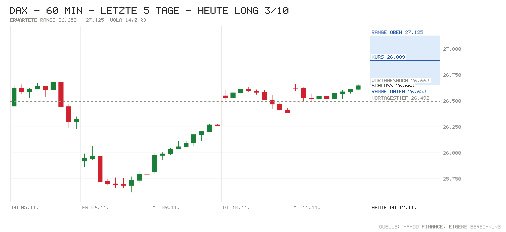

Tagesentscheidung ab 09:04 bis 17:30 Uhr
Für Long sprechen die Schwergewichte: Siemens meldet ein Rekordjahr mit über 100 Mrd. € Auftragseingang und hebt die Mittelfristziele (Tradegate +3,2 %), dazu Munich Re (+1,2 %), Allianz und Merck (je +0,7 %). Die Indikation von 26.889 liegt über dem Rekordhoch von 26.692, der große Trend ist seit gestern Bull, und Wall Street schloss stark (Nasdaq 100 +2,28 %). Das wichtigste Gegenargument kommt aus den USA: Berichte, dass der Nvidia-Aufsichtsrat Chef Jensen Huang ablösen könnte, drücken die Nasdaq-Futures um 1,0 %, Asien schloss im Minus, und die US-10J-Rendite steht bei 5,00 %. Die Lücke von +0,85 % ist schon gelaufen – darum nur 3/10.
- Kurs um 09:04
- 26.889
- Erwartete Range
- 26.653 – 27.125
- Eingepreist (Tagesoption)
- ±0,88 %
Einschätzung vom Kurs um 09:04 (Median der Indikationen L&S, J.P. Morgan, UBS) bis zum Xetra-Schluss. Range = ±1 σ für die restliche Handelszeit aus der DAX-Tagesoption (ca. 68 %). Keine Anlageberatung.
Chart

Signale
| Signal | Wirkung | Stand und Einordnung |
|---|---|---|
| Vorgaben USA | Neutral | Mittwoch: S&P 500 +1,31 %, Nasdaq 100 +2,28 %, Dow +0,49 %. Futures jetzt: S&P −0,46 %, Nasdaq −1,00 %, Dow +0,02 % – Nvidia nachbörslich ca. −8 % nach Berichten über eine mögliche Ablösung von Jensen Huang. |
| Eröffnung & erste Minuten | Rückenwind | Indikation 26.889 (+0,85 % zum Xetra-Schluss 26.663), über dem Rekordhoch 26.692. Eröffnung und Hoch/Tief zum Abruf noch n/v. |
| Asien & China | Gegenwind | Nikkei −0,70 %, Shanghai −0,67 %, CSI 300 −0,78 %, Hang Seng −1,45 %; Kospi ca. −1,3 % (Nvidia-Zulieferer). |
| Datenüberraschungen | Gegenwind | US-Verbraucherpreise Oktober (10.11.) über Prognose: Kern +0,3 % vs. 0,2 %. Heute früh UK: BIP Q3 +0,2 % q/q vs. 0,0 %, Industrie besser – für den DAX nachrangig. |
| Zinserwartung | Gegenwind | Fed 09.12.: 113 % für +25 Bp.; Januar 61 % für eine weitere Erhöhung. EZB-Einlagensatz 2,50 %. |
| Renditen | Gegenwind | US 10J 5,00 % live (+1 Bp.), Bund 10J 3,31 % (−1 Bp.). Die 5 % in den USA bleiben die Last. |
| Kreditstress | Rückenwind | FRED n/v; Ersatz: HYG +0,22 %, LQD +0,08 % – kein Stress. |
| Öl & Dollar | Neutral | Brent 93,23 USD (+0,51 %) belastet; EUR/USD 1,1090 (−0,71 %) – der schwache Euro hilft Exporteuren. |
| Trend | Rückenwind | Klar über 21-T. (25.781), 50-T. (25.580) und 200-T.-Schnitt (24.953). Großer Trend Bull seit 11.11., passt zu Long. |
| Positionierung | Neutral | COT 03.11.: Hedgefonds im S&P-Future netto −372.318 (+28.286), Asset Manager +928.584. Kein Extrem. |
| Unternehmensnachrichten | Rückenwind | Superdonnerstag: Siemens +3,2 %, Munich Re +1,2 %, Allianz +0,7 %, Merck +0,7 % (Tradegate). FMC −2,4 % nach Platzierung durch Fresenius. SAP/Infineon droht Nvidia-Gegenwind (eigene Einschätzung). |
| Profi-Sicht | Gegenwind | ING: Dollar-Rally ist zinsgetrieben, EUR/USD testet 1,10; Risikostimmung gedämpft trotz Aktienerholung. |
| Termine bis 17:30 | Neutral | Kein großer Termin: US-Erstanträge 14:30, Fed-Vize Barr 16:00. Unsicherheit: Nvidia-Aufsichtsrat könnte laut Berichten schon heute entscheiden. |
Großer Trend (3-Monats-Momentum)
- Stand
- Bull
- Seit
- 11.11. (6 Wechsel in 3 Monaten)
- Schluss 11.11.
- +0,84 % vs. Zins +0,60 %
- Heute dreht es bei Schluss unter
- 26.498 (jetzt −1,5 %)
Mit der Indikation von 26.889 bleibt das Signal klar Bull; erst ein Rutsch um rund 1,5 % bis zum Schluss würde es wieder drehen. Bull = Rendite der letzten 3 Monate über dem Geldmarktzins, Bear = darunter. Regel: Rendite der letzten 63 Handelstage (≈ 3 Monate) gegen den EZB-Einlagensatz, jeden Tag zum Schluss neu entschieden, Zeitrahmen Tageskerzen (nach Antonacci 2014, dort monatlich über 12 Monate; täglich entschieden dreht es öfter falsch). Keine Anlageberatung.
Bilanz von gestern
11.11.: Long 3/10 – Richtung richtig, +58 Punkte (Kurs zur Notiz 26.605, Schluss 26.663, Hoch 26.659, Tief 26.492). Range ±249 um den Kurs zur Notiz getroffen (Bewegung +58); bisher 67 % von 6 Tagen getroffen (Soll ca. 68 %). Gesamt seit Start: 6 Einschätzungen, Richtung richtig 33 %, Summe −468 Punkte bis Schluss (Schnitt −78).
Marktlage
| Markt | Stand | Veränderung |
|---|---|---|
| DAX (Schluss 11.11.) | 26.662,77 | +1,20 % |
| DAX (Eröffnung heute) | n/v | n/v |
| DAX (jetzt, Kurs zur Notiz 09:04) | 26.889 | +0,85 % |
| S&P 500 (Schluss 11.11.) | 7.619,38 | +1,31 % |
| Nasdaq 100 (Schluss 11.11.) | 28.374,25 | +2,28 % |
| Dow Jones (Schluss 11.11.) | 52.486,49 | +0,49 % |
| US-Futures (S&P / Nasdaq) | 7.605,00 / 28.187,75 | −0,46 % / −1,00 % |
| Nikkei 225 | Eröffnung 61.475 → Schluss 60.819 | −0,70 % |
| Shanghai Composite | Eröffnung 3.673 → Schluss 3.656 | −0,67 % |
| CSI 300 | Eröffnung 4.063 → Schluss 4.044 | −0,78 % |
| Hang Seng | Eröffnung 24.121 → aktuell 23.963 | −1,45 % |
| EUR/USD | 1,1090 | −0,71 % |
| Brent (USD/Barrel) | 93,23 | +0,51 % |
| Gold (USD/Unze) | 3.967,10 | −0,83 % |
| VIX (Schluss 11.11.) | 17,49 | −10,12 % |
China: Festland und Hongkong schwächer, Tech-Werte unter Druck nach den Nvidia-Berichten; dazu belastet der starke Dollar (eigene Einordnung, kein eigener Auslöser in China gefunden). Farben bei Brent und VIX nach Wirkung auf Aktien. DAX-Eröffnung lag zum Datenabruf (Yahoo, bis 15 min verzögert) noch nicht vor.
Anleihen & Zinsen
| Markt | Stand | Veränderung |
|---|---|---|
| Bund 2J | 3,10 % | +2 Bp. (vs. Bundesbank 11.11.: 3,08 %) |
| Bund 10J | 3,31 % | −1 Bp. |
| US-Treasury 2J | 4,77 % (live) / 4,73 % (offiziell 10.11.) | n/v |
| US-Treasury 10J | 5,00 % (live) | +1 Bp.; 1 Woche (offiziell): +3 Bp. |
| Fed, Sitzung 09.12. | Erhöhung um 25 Bp. erwartet | 113 % (Rest: Chance auf 50 Bp.) |
| EZB-Einlagensatz | 2,50 % | zuletzt +25 Bp. (16.09.) |
| Euro-Hochzins-Aufschlag | n/v (FRED) | n/v |
| US-Hochzins (Ersatz: HYG) | 77,35 USD | +0,22 % (Tag) |
Termine heute
- 07:00 Quartalszahlen: Siemens (GJ 2026), Allianz (Q3), Munich Re (Q3), Merck KGaA (Q3); außerdem Talanx, LEG, Ströer
- 08:00 UK: BIP Q3 – Ist +0,2 % q/q vs. Prognose 0,0 %; Industrieproduktion +0,3 % m/m vs. −0,4 %
- 09:30 Pressekonferenzen Allianz, Merck; Analystencall Siemens
- 14:30 USA: Erstanträge Arbeitslosenhilfe – Prognose 194K · zuvor 189K
- 16:00 USA: Verkäufe bestehender Häuser – Prognose 3,89 Mio. · zuvor 3,99 Mio.; Fed-Vize Barr spricht
- 17:30 Fed: Goolsbee spricht; später Nagel (18:30), Daly (19:10), Lagarde (22:30)
Nachrichten zu DAX-Werten
- Siemens: Rekordgeschäftsjahr, Auftragseingang über 100 Mrd. €, vergleichbares Neugeschäft +25 %, Umsatz +8 %; weiteres Wachstum für 2026/27, Mittelfristziele angehoben. Tradegate +3,2 %. Einschätzung: klar positiv, größter Indexbeitrag des Tages.
- Allianz: Rekordergebnis nach neun Monaten, Ausblick 2026 optimistischer; Fondsgeschäft gleicht Naturkatastrophen aus. +0,7 %. Einschätzung: positiv.
- Munich Re: Überschuss ca. −13 % wegen Katastrophenschäden, Großschäden im Q3 mit 646 Mio. € aber unter Erwartungen. +1,2 %. Einschätzung: leicht positiv.
- Merck KGaA: Überraschend gutes Q3, Jahresziele erneut angehoben (Life Science stark). +0,7 %. Einschätzung: positiv.
- Fresenius / FMC: Fresenius platziert ca. 13,4 Mio. FMC-Aktien zu 39 € (ca. 524 Mio. €), Anteil sinkt auf ca. 20 %. FMC −2,4 %. Einschätzung: kurzfristig negativ für FMC, neutral für Fresenius.
Profi-Sicht & Positionierung
- ING THINK: Die Dollar-Rally ist zinsgetrieben (heiße CPI, falkenhafte Fed); EUR/USD dürfte 1,10 testen, ein Bruch darunter nur bei eingepreisten 50 Bp. im Dezember – US-Erzeugerpreise morgen als nächster Auslöser (FX Daily). Langfristige Inflationserwartungen im Euroraum (5J5J-Swap 2,07 %) hält ING für zu niedrig, Risiko nach oben (Rates Spark).
- Positionierung (COT, Stand 03.11.): Hedgefonds im S&P-Future netto −372.318 (+28.286), Asset Manager +928.584 (+5.135); Euro: Asset Manager bauen Long ab (−28.324), passt zum schwächeren Euro. Kein Extrem.
Quellen
- Marktdaten per Skript: Amber Terminal / Yahoo Finance (Kurse, Futures, HYG/LQD), onvista (Indikationen, VDAX), Eurex (DAX-Tagesoption ODAP), Nasdaq (Kalender), CNBC / Bundesbank / US-Treasury (Renditen), CFTC (COT), ING THINK; FRED (Kreditaufschläge) nicht erreichbar
- onvista/dpa-AFX: Aktien Frankfurt Ausblick – Gewinne erwartet, Dax winkt Rekordhoch
- Yahoo Finance: Wall St futures fall as Nvidia slides on report of possible CEO ouster
- CNBC: Nasdaq-100 futures slide as Nvidia sell-off resumes
- finanznachrichten.de: Tagesvorschau 12. November – Superdonnerstag
- ING THINK: FX Daily – EUR/USD gears up for a 1.10 test
- ING THINK: Rates Spark – Inflation pricing sends mixed signals